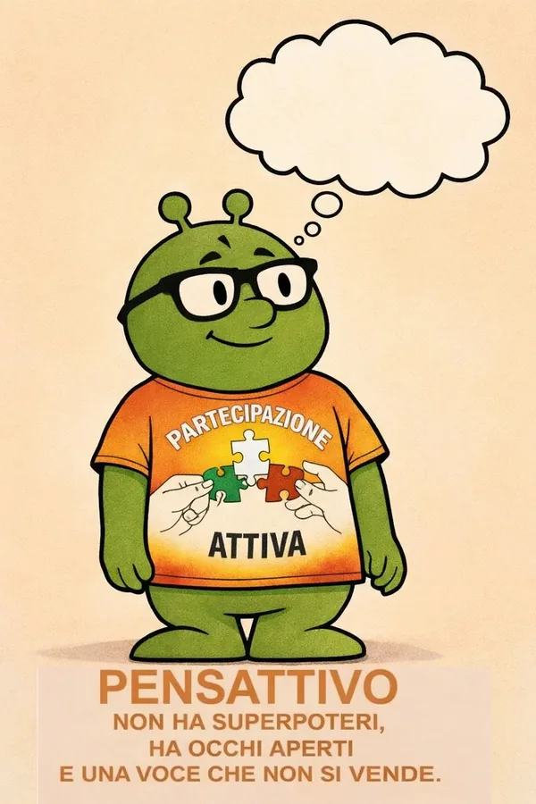

Avrai già visto questo omino verde in giro per il sito. È ora di presentarlo: si chiama PensAttivo, e sì, è un alieno.
Perché proprio un alieno
Immagina un marziano appena atterrato in Italia. Osserva gli umani discutere di politica e resta perplesso: molti non guardano cosa si propone, ma chi lo propone. Se lo dice la mia squadra è giusto; se lo dice l’altra è sbagliato — a prescindere. Come tifare per una maglietta invece che per un’idea.
PensAttivo non capisce questo tifo, perché viene da fuori. E proprio perché viene da fuori vede una cosa semplice che a noi, presi dalla partita, spesso sfugge: una proposta è buona o cattiva per quello che dice, non per la casacca di chi la firma.
Non è solo una simpatica mascotte
Dietro la battuta c’è il metodo di Partecipazione Attiva. Lo stesso sguardo «da fuori» di PensAttivo è il criterio con cui valutiamo ogni battaglia: la accetteresti anche se a governare fosse chi non voti? Se una regola ti va bene solo quando comanda la tua parte, non è una regola giusta: è un’arma. Se invece regge comunque — con l’amico e con l’avversario — allora è solida.
Ecco perché PensAttivo compare accanto ai nostri temi: RC Auto, sanità, legge elettorale, astensionismo. Non è un logo decorativo. È il promemoria, in forma di alieno verde, che su ogni questione proviamo a ragionare così: guardando i fatti, non le bandiere.
La regola di PensAttivo
Se dovessimo riassumere il personaggio in una frase, sarebbe questa:
Prima di dire «giusto» o «sbagliato», togliti la maglietta della squadra e guarda i fatti da alieno. Poi decidi.
Dove trovi PensAttivo
Il nostro alieno ha già preso posizione su diverse battaglie. Ecco dove lo trovi al lavoro:


PensAttivo continuerà a spuntare accanto alle nostre battaglie. Ogni volta che lo vedi, è un invito: guarda i fatti, non la maglietta.